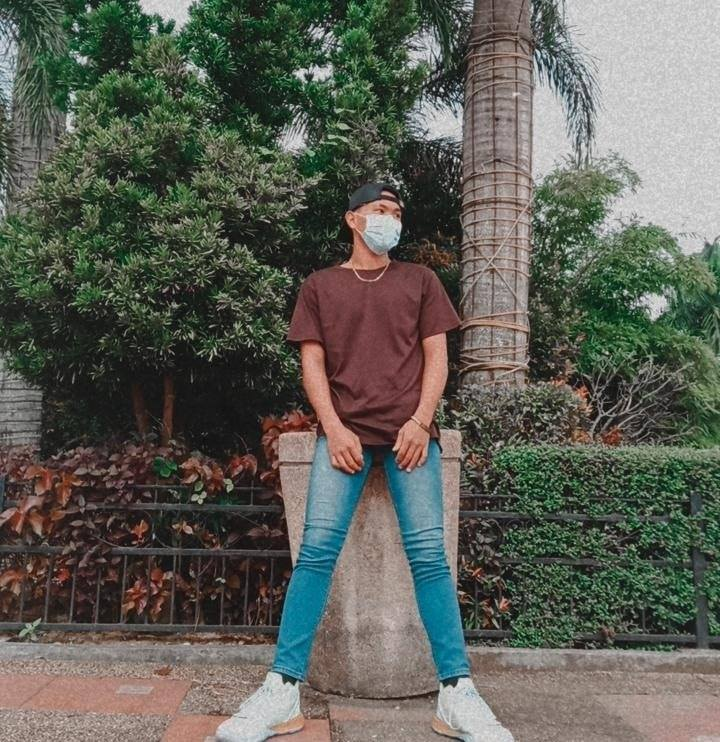

TESTIMONIALS

ALEXANDER THIANHOM
ALEXANDER THIANHOM
Edson is the kind of person who does more and speaks less. He rarely talks about his plans because he knows that people will respect him more if they heard the results of his hard work first, more than that he's trying to level up every
single day. I can see in him the work ethic of my grandparents and the discipline of today's generation combined which are the ingredients of success in every circumstance he face.
NIÑA FELIPE
NIÑA FELIPE
I knew him since we were in grade six. He is been always a jolly and cheerful person. He always makes other people laugh and be friendly to everyone. The type of person who enjoyed his life and just chill in terms of his high school life.
He treasures his friends and he is truly an important person to me because he showed me how to handle things lightly and he motivated me. Although I know he experienced difficulties in life but he always put a smile on his face. He is truly
a strong person who loves to play mobile legends. A person who can truly trust and who is always open to listen to my problems and rants in life. I am looking forward to seeing him succeed in life in the future

IVAN LUGO
IVAN LUGO
His ambition and dreams are big for himself and his family. He learned responsibility and kindness from his mother and father. Having his family is a good reason to keep fighting for his dreams, and their love is his support system for
pursuing his life's greatest ambitions. He is an amazing person. I've known him for about 3 years. He is cute and caring. Being around him was a lot of fun. He is always there for you when you need him, and he never leaves you, even when
you are going through a difficult moment. I adore him so much because of this.
JOSHUA GUILLIERMO
JOSHUA GUILLIERMO
He is a good friend and a happy go lucky person that i know. I've met him when we are in Junior highschool at Isabela School of Arts and Trades. He is a friend of a friend of mine. But now he is one of my close friend in college.
IAN DALUPANG
IAN DALUPANG
A talkative yet kind person you can always see him with a smile on his face and a kind of person whom anyone could get along with..
Scroll To Top